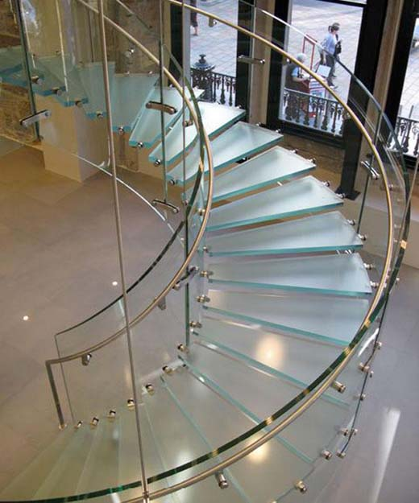
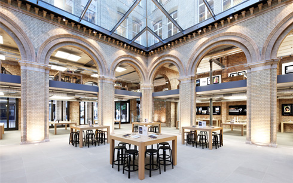
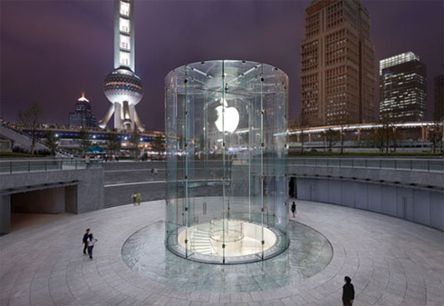
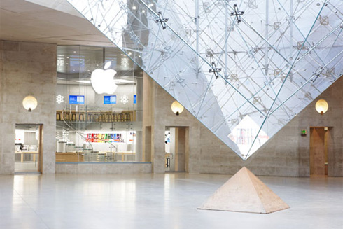
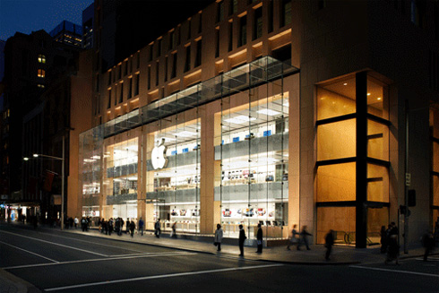
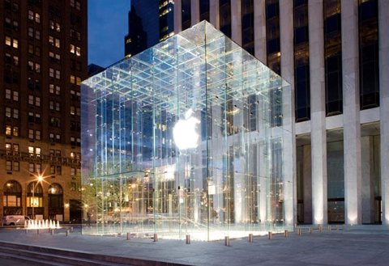

Chương 28

obs ghét phải nhường quyền kiểm soát bất cứ thứ gì, nhất là khi nó có thể gây ảnh hưởng tới trải nghiệm khách hàng. Nhưng ông vấp phải một vấn đề. Có một phần trong cả quy trình ông không cách nào khống chế nổi: trải nghiệm của việc mua một sản phẩm Apple trong cửa hàng.
Thời hoàng kim của Tiệm Byte đã lui vào dĩ vãng. Việc bán hàng của ngành này đã chuyển dịch từ các cửa hàng chuyên về máy tính ở từng địa phương sang các chuỗi cửa hàng khổng lồ và những siêu trung tâm thương mại, nơi đa phần nhân viên bán hàng đều chẳng có chút kiến thức hay động lực nào để giải thích về bản chất khác biệt trong những sản phẩm của Apple. “Tất cả những gì người bán hàng quan tâm chỉ là sự quyến rũ của 50 đô-la mà thôi,” Jobs nói. Các loại máy tính khác thì cũng na ná như nhau, nhưng máy tính của Apple thì sở hữu những chức năng tân tiến và giá tiền cao hơn. Jobs không muốn một chiếc iMac lại phải tọa trên giá giữa một chiếc hiệu Dell và một chiếc hiệu Compaq trong khi một nhân viên bán hàng vận đồng phục đọc làu làu đủ loại thông số kĩ thuật của từng chiếc một. “Trừ phi chúng ta tìm ra cách chuyển tải thông điệp của mình đến với khách viếng thăm cửa hàng, nếu không chúng ta gay mất.” Giữ bí mật tối đa, bắt đầu từ cuối năm 1999, Jobs bắt đầu phỏng vấn các giám đốc, những người có tiềm năng phát triển một chuỗi cửa hàng bán lẻ của Apple. Một trong những ứng viên này thể hiện nỗi đam mê dành cho thiết kế và cả lòng nhiệt tình như con trẻ của một chuyên gia bán lẻ bẩm sinh: Ron Johnson, phó chủ tịch phụ trách sản phẩm tại hệ thống bán lẻ Target, người chịu trách nhiệm giới thiệu những sản phẩm có hình thức khác biệt, ví như sản phẩm ấm trà do Michael Graves thiết kế. “Steve dễ nói chuyện lắm,” Johnson hồi tưởng lại buổi gặp gỡ đầu tiên của hai người. “Đột nhiên có một gã vận chiếc quần jean cũ với áo thun cao cổ đến, và anh ta bắt đầu tíu tít kể chuyện vì sao anh ta lại cần những cửa hàng tuyệt hảo. Nếu Apple thành công, anh ta bảo, thì chúng tôi sẽ ghi điểm về khoản đổi mới. Mà anh sẽ không đời nào thắng được, trừ khi anh có cách nào đó để giao tiếp với khách hàng.”
Khi Johnson quay trở lại vào tháng Giêng năm 2000 để phỏng vấn một lần nữa, Jobs gợi ý họ nên đi dạo một lát với nhau. Họ đi tới Khu Tổ hợp Mua sắm Stanford trải rộng với 140 cửa hàng lúc 8 rưỡi sáng. Các cửa tiệm vẫn còn chưa mở cửa, vậy nên họ cứ dạo tới dạo lui khắp cả tổ hợp hết lượt này tới lượt khác và bàn tán xem nó được tổ chức ra sao, vai trò của những tiệm tạp hóa cỡ lớn như thế nào so với những cửa tiệm khác, và vì đâu những cửa tiệm chuyên biệt một mặt hàng nào đó lại đạt được thành công.
Đến 10h, lúc các tiệm mở cửa, họ vẫn đang dạo qua dạo lại và trò chuyện, họ bước vào tiệm Eddie Bauer. Nó có một lối cửa thông ra khu tổ hợp và một lối khác thông ra bãi đậu xe. Jobs quyết định rằng các cửa hàng của Apple sẽ chỉ nên có một lối ra vào, như vậy sẽ giúp việc kiểm soát trải nghiệm của khách hàng được dễ dàng hơn. Và cửa tiệm Eddie Bauer, như cả hai đều đồng tình nhận xét - quá dài và hẹp. Việc khách hàng nắm bắt ngay về mặt trực giác cách bố trí cửa hàng từ lúc vừa bước chân vào là rất quan trọng.
Trong khu tổ hợp này không có lấy một cửa hàng công nghệ, và Johnson lí giải nguyên do: Theo cách suy nghĩ thường tình của mọi người thì một khách hàng nào đó, khi đưa ra một quyết định mua sắm lớn và không thường xuyên như là mua một chiếc máy tính, sẽ cam tâm tình nguyện lái đến những nơi kém phần thuận tiện nhưng có thể có được giá cả mềm hơn. Jobs không đồng ý.
Các cửa tiệm Apple phải nằm trong các khu thương mại và ở những tuyến phố chính - ở những nơi có lưu lượng người đi bộ đông đúc, bất kể đắt đỏ tới đâu. “Có thể chúng ta không bắt họ lái xe mười mấy cây số để đến coi sản phẩm của chúng ta ra sao, nhưng chúng ta hoàn toàn có thể lôi kéo họ bước mười thước,” ông nói. Nhất là, những người dùng Windows sẽ phải bị đánh úp: “Nếu họ có đi ngang qua, họ sẽ ghé vào chỉ vì hiếu kì, nếu chúng ta khiến cho cửa hàng đủ chào mời hấp dẫn, và chỉ cần chúng ta có cơ hội trưng ra cho họ thấy những gì ta có, ta sẽ thắng.” Johnson nói rằng quy mô của một cửa hàng chính là chỉ báo mức độ quan trọng của nhãn hàng đó.
“Thương hiệu Apple có lớn được bằng Gap không?” ông hỏi. Jobs đáp rằng nó lớn hơn nhiều. Johnson trả lời rằng các cửa hàng của Apple vì thế sẽ phải lớn hơn. “Nếu không thì các anh sẽ không được tương xứng đâu.” Jobs miêu tả câu cách ngôn của Mike Markkula rằng một công ty tốt phải “quy tội” - nó phải chuyển tải những giá trị và tầm quan trọng của mình trong mọi thứ nó làm ra, từ đóng gói đến tiếp thị sản phẩm. Johnson thích mê. Điều đó thực sự nên được áp dụng vào các cửa hàng đại diện cho công ty. “Cửa hàng sẽ trở thành mặt thể hiện giá trị vật chất của một thương hiệu,” ông dự đoán, ông nói rằng khi còn trẻ, ông đã bước chân vào những cửa hàng đồ sộ như lâu đài, được ốp gỗ và tràn ngập không khí nghệ thuật mà Ralph Lauren đã sáng tạo nên trên phố 72 và Đại lộ Madison ở Manhattan. “Bất cứ khi nào tôi mua một chiếc áo phông polo, tôi đều nghĩ đến lâu đài ấy, một biểu hiện vật chất của những ý tưởng Ralph nảy ra,” John kể. “Mickey Drexler đã thực hiện việc đó với Gap. Anh không thể nghĩ về một sản phẩm của Gap mà lại không nghĩ tới cửa tiệm hoành tráng của Gap với không gian thoáng sạch cùng những sàn gỗ, các bức tường màu trắng và hàng hóa xếp sắp ngăn nắp.”
Trò chuyện xong, họ lái xe tới Apple, ngồi trong một gian phòng họp và xem xét mấy sản phẩm của công ty. Không nhiều lắm, không đủ để lấp đầy các giá bày hàng của một cửa hiệu thông thường, nhưng đó lại là một lợi thế. Kiểu cửa hàng mà họ sẽ xây dựng, họ quyết định, sẽ phải hưởng lợi từ việc chỉ có số ít sản phẩm. Nó sẽ phải tối giản, thoáng khí và để chừa thật nhiều khoảng không để mọi người thử các sản phẩm. “Đa phần mọi người đều không biết gì về sản phẩm của Apple,” Johnson nói. “Họ coi Apple như một niềm sùng kính. Còn anh lại muốn chuyển nỗi ngưỡng vọng của họ thành cái gì đó sành điệu, thì việc nắm trong tay một cửa tiệm phi thường, nơi ai nấy có thể thử các sản phẩm, sẽ giúp thực hiện điều đó.” Chuỗi các cửa hàng sẽ quy tụ những nét riêng biệt của sản phẩm Apple: nghịch ngợm, dễ dùng, sáng tạo và nằm ở phía tươi sáng của lằn ranh giữa muộn phiền và kinh hãi.
Bản mẫu
Đến lúc Jobs trình bày ý tưởng của mình, ban giám đốc không mảy may xúc động. Tập đoàn máy tính Gateway đã thất bại thảm hại sau khi mở ra các cửa hiệu vùng ngoại ô, và lập luận của Jobs rằng ông sẽ làm tốt hơn vì các cửa tiệm sẽ tọa lạc ở những địa điểm đắt tiền hơn - không hề đảm bảo điều gì, ít nhất là theo đánh giá chung. “Tư duy Khác biệt” và “Dành riêng cho những kẻ điên rồ,” thì rất hay nếu chỉ là những câu khẩu hiệu quảng cáo, nhưng ban giám đốc lại chần chừ trước việc biến chúng thành kim chỉ nam cho chiến lược của cả tập đoàn. “Tôi gãi đầu gãi tai và nghĩ rằng chuyện này thật là điên rồ,” Art Levinson kể lại. ông là CEO của Genetech và mới gia nhập Apple hồi năm 2000. “Chúng ta chỉ là công ty nhỏ, một tay chơi rìa ngoài. Tôi nói rằng tôi không chắc công ty có thể ủng hộ thứ gì đó như vây.” Ed Woolard cũng tỏ ý hoài nghi. “Gateway đã thử và thất bại, trong khi Dell đang bán sản phẩm trực tiếp đến tay người tiêu dùng, không cần đến cửa hàng và họ đã thành công,” ông lập luận. Jobs không mấy tán thưởng thái độ bàn lùi từ ban giám đốc. Lần cuối cùng xảy ra tình trạng ấy, ông đã thay thế phần lớn các thành viên ban giám đốc. Lần này, vì những lí do cá nhân, thêm nữa, đã quá mệt với trò co kéo qua lại với Jobs, Woolard quyết định sẽ lùi bước. Nhưng trước khi làm vậy, ban giám đốc nhất trí thông qua hoạt động thử nghiệm với loạt bốn cửa hàng bán lẻ Apple.
Jobs có được một người ủng hộ trong ban giám đốc. Vào năm 1999, ông đã tuyển vào Millard “Mickey” Drexler, hoàng tử bán lẻ xuất thân từ khu Bronx. Hồi còn ở cương vị CEO của Gap, ông này đã biến đổi một chuỗi cửa hàng ủ rũ thành biểu tượng của văn hóa y phục thường ngày Mỹ. ông là một trong số ít những người trên đời này cũng thành công và hiểu biết ngang ngửa Jobs xét về khía cạnh những mong muốn về thiết kế, hình ảnh và người tiêu dùng. Thêm vào đó, Drexler khẳng định quyền kiểm soát từ- đầu-đến-cuối: cửa tiệm Gap chỉ bán sản phẩm Gap, và sản phẩm của Gap chỉ được bán gần như độc quyền trong các cửa hàng của Gap. “Tôi rời khỏi lĩnh vực kinh doanh cửa hàng bách hóa vì tôi không thể chịu nổi cảnh không được kiểm soát sản phẩm của mình, từ chỗ nó được sản xuất ra sao cho tới được bán ra thế nào,” Drexler nói. “Steve đích xác là là một người mong muốn kiểm soát như vậy, đó là lí do tại sao tôi nghĩ anh ta tuyển tôi vào.” Drexler đưa ra cho Jobs một lời khuyên: Bí mật xây dựng một bản mẫu cửa hàng gần khuôn viên Apple, trang bị nội thất hoàn chỉnh và rồi cứ chờ nguyên ở đó cho đến khi nào cảm thấy thực sự hài lòng với nó. Vậy là Johnson và Jobs thuê một nhà kho bỏ không ở Cupertino. Cứ mỗi ngày thứ Ba trong vòng sáu tháng, họ lại triệu tập các phiên họp thảo luận đưa ý tưởng suốt buổi sáng ở đó, trau chuốt lại triết lí bán lẻ của họ trong khi dạo bước trong không gian cửa hàng. Đó là một cửa hàng mô phỏng xưởng thiết kế của Ive, một chốn trú ẩn nơi Jobs, với lối tiếp cận dựa trên thị giác của mình, có thể đưa ra những ý tưởng cách tân nhờ chạm vào và ngắm nhìn các phương án thiết kế trong quá trình chúng hoàn thiện dần dần. “Tôi yêu cảm giác được một mình thư thái dạo bước ở đó, để kiểm tra xem nó ra sao,” Jobs hồi tưởng.
Đôi khi ông cũng bắt Drexler, Larry Ellison và những người bạn chí thiết khác tới đó ngắm nghía. “Suốt bao nhiêu dịp cuối tuần, lúc không bắt chúng tôi phải xem những cảnh mới của phim Toy story thì ông ấy lại ép phải đến chỗ nhà kho và ngắm nhìn mô hình cửa hiệu,” Ellison kể. “ông ấy bị ám ảnh bởi mọi chi tiết thẩm mỹ và trải nghiệm dịch vụ khách hàng. Mọi chuyện cứ thế, đến mức mà tôi phải kêu lên, „Steve, tôi sẽ không đời nào đến thăm anh nếu anh bắt chúng tôi đến chỗ cửa hàng một lần nữa.”
Oracle, công ty của Ellison khi đó đang phát triển phần mềm cho hệ thống thu ngân cầm tay, để tránh phải sử dụng quầy tính tiền. Một lần viếng thăm, Jobs đã thúc Ellison phải tìm ra cách nào đấy để hợp lí hóa quy trình nhờ loại bỏ bước nào đó không cần thiết, ví như đưa thẻ tín dụng hay in biên lai. “Nếu nhìn vào cửa hàng và sản phẩm, anh sẽ thấy ngay nỗi ám ảnh của Steve với vẻ đẹp ở dạng hình giản dị - thứ chủ nghĩa tối giản duy mỹ và tuyệt vời của Bauhaus, vươn cả một quãng dài, ra tới tận quy trình thu ngân ở cửa hàng,” Ellison nói. “Nó đồng nghĩa với số bước tuyệt đối tối thiểu. Steve đã đưa cho chúng tôi công thức chính xác, sát sao rằng anh ta muốn hệ thống thu ngân phải hoạt động thế nào.”
Khi Drexler đến thăm nguyên mẫu cửa hàng, ông đưa ra vài lời phê bình: “Tôi nghĩ là không gian đã bị băm vụn và chưa đủ thoáng sạch. Có quá nhiều chi tiết kiến trúc và màu sắc rối rắm.” ông nhấn mạnh rằng một khách hàng phải có thể bước vào không gian bán hàng và, chỉ với một cái quét mắt, đã hiểu rõ được cả luồng bài trí. Jobs tán đồng rằng sự đơn giản và ít chi tiết gây xao lãng chính là những yếu tố then chốt của một cửa hàng tuyệt vời, hệt như với sản phẩm vậy.
“Sau đó, Jobs đã xác định chắc chắn,” Drexler nói. “Tầm nhìn của Jobs là kiểm soát tuyệt đối toàn bộ trải nghiệm sản phẩm của ông ta, từ chỗ nó được thiết kế ra sao cho tới việc nó được bán ra thế nào.”
Vào tháng 10 năm 2000, gần đến thời điểm mà Jobs ngỡ rằng đoạn cuối của quy trình, Johnson choàng tỉnh lúc nửa đêm, ngay trước buổi họp thứ Ba hằng tuần với một suy nghĩ đau đớn: Bọn họ đã phạm phải một sai lầm căn cốt nào đó. Họ đang tổ chức cửa hàng quanh mỗi dòng sản phẩm chính yếu của Apple, với các khu vực dành cho PowerMac, iMac, iBook và PowerBook.
Nhưng Jobs đã bắt đầu phát triển một ý tưởng mới: chiếc máy tính như một trục trung tâm cho tất cả các hoạt động số của bạn. Nói cách khác, máy tính của bạn có thể xử lí cả các đoạn phim và hình ảnh từ máy chụp hình của bạn, và có lẽ một ngày nào đó là cả máy nghe nhạc và các bài hát, những cuốn sách và tạp chí của bạn nữa. Suy nghĩ trước bình minh của Johnson là các cửa tiệm phải sắp xếp các phần trưng bày không chỉ xoay quanh bốn dòng máy tính của công ty, mà phải xoay quanh những thứ mà con người ta có thể sẽ muốn thực hiện. “Lấy ví dụ, tôi nghĩ nên có một khu phim ảnh, nơi chúng tôi bày ra đủ các máy Mac và PowerBook chạy iMovie và cho bạn thấy rằng bạn có thể truy xuất thẳng từ máy quay của mình rồi biên tập lại.” Thứ Ba đó, Johnson đến văn phòng Jobs từ sớm và nói cho Jobs nghe về nhận thức đột ngột của ông, rằng họ cần phải tái tổ chức các cửa hàng. Johnson đã từng nghe những câu chuyện kể về giọng lưỡi ngoa ngoắt của sếp mình, nhưng ông vẫn chưa cảm thấy nó quăng ra - cho đến thời điểm này. Jobs phun trào. “Anh có biết cái thay đổi này lớn đến cỡ nào không?” Jobs gào lên. “Tôi đã xoay sở với cái cửa hàng này suốt sáu tháng, mà bây giờ anh lại muốn thay đổi mọi thứ à!” Jobs đột nhiên im bặt. “Tôi mệt lắm rồi. Tôi không biết liệu có thể thiết kế một cửa hàng khác từ đống xà bần này không.”
Johnson cũng câm lặng luôn, và Jobs yêu cầu ông ta cứ như vậy. Trên chuyến xe chạy tới chỗ mô hình cửa hàng, nơi mọi người đã tề tựu chuẩn bị cho cuộc họp thứ Ba thường lệ, Jobs bảo Johnson đừng nói gì, với ông và cả các thành viên khác của đội. Vậy là chuyến xe kéo dài bảy phút diễn ra trong im lặng. Khi họ đến nơi, Jobs đã xử lí thông tin xong xuôi. “Tôi biết là Ron đã đúng,” ông nhớ lại. Vậy là trước vẻ kinh ngạc của Johnson, Jobs khai màn cuộc họp bằng lời tuyên bố,
“Ron nghĩ rằng chúng ta đã nhìn nhận sai lầm. Anh ấy nghĩ rằng cửa hàng phải được tổ chức lại, không phải xoay quanh sản phẩm mà thay vào đó, là xoay quanh những gì người sử dụng muốn làm.” Một chút ngừng lời, rồi Jobs tiếp tục. “Các bạn biết đấy, Ron nói đúng.” ông nói rằng họ sẽ làm lại thiết kế, mặc dù việc này nhiều khả năng sẽ làm buổi triển lãm giới thiệu dự tính vào tháng Giêng phải chậm lại tới ba hay bốn tháng. “Chúng ta chỉ có duy nhất một cơ hội để thực hiện nó chính xác thôi.”
Jobs (và tất cả đội của ông khi đó) rất thích được kể lại chuyện tất cả mọi thứ ông đã thực hiện đâu ra đó chỉ cần có một giây trước khi ông nhấn nút quay lại từ đầu. Mỗi trường hợp như vậy, ông phải làm lại thứ gì đó mà ông phát hiện ra là vẫn chưa hoàn hảo. Ông kể về chuyện ông đã làm vậy với bộ phim Toy story, khi nhân vật chàng cao bồi Woody bị phát triển lên thành một “tên khốn”, và một vài lượt là với chiếc máy Macintosh nguyên bản. “Nếu có điều gì đó chưa thật đúng đắn, bạn không thể chỉ lờ tịt nó đi và bảo là bạn sẽ chỉnh sửa sau,” ông nói. “Đó là cách các công ty khác vẫn làm.”
Khi bản mẫu cửa hàng có chỉnh sửa đã được hoàn thiện vào tháng Giêng năm 2001, Jobs cho phép ban giám đốc đến thăm quan lần đầu tiên, ông giải thích những triết lí phía sau phương án thiết kế bằng cách phác họa trên tấm bảng trắng; ròi ông cùng các thành viên ban giám đốc lên chiếc xe tải nhẹ để đi hết chặng đường dài hai dặm. Khi họ nhìn thấy những gì Jobs và Johnson đã xây dựng được, họ đồng loạt nhất trí việc tiếp tục triển khai. Ban giám đốc cũng đồng tình rằng cửa hiệu này sẽ đưa mối quan hệ giữa bán lẻ và hình ảnh thương hiệu lên một tầng bậc mới. Nó cũng sẽ đảm bảo chắc chắn rằng khách hàng không chỉ coi những chiếc máy tính Apple đơn thuần chỉ là sản phẩm hàng hóa như là Dell hay Compaq.
Nhưng đa phần các chuyên gia bên ngoài thì lại không tán đồng. “Có lẽ đã đến lúc Steve Jobs từ bỏ cái lối tư duy quá ư khác biệt,” tờ Business Week viết như vậy trong một bài luận với tiêu đề “Xin lỗi Steve, đây là lí do tại sao các cửa hàng Apple sẽ chẳng đi đến đâu.” Cựu giám đốc tài chính của Apple - Joseph Graziano được dẫn lời như sau, “Vấn đề của Apple là nó vẫn cứ tin rằng cách để công ty tăng trưởng là phục vụ món cá hồi cho một thế giới cơ hồ đã mãn nguyện với món phó mát kèm khoai tây chiên giòn rồi.” Còn nhà cố vấn bán lẻ David Goldstein thì tuyên bố,
“Tôi cho mấy cửa hàng đó hai năm trước khi chúng phải tắt điện vì một sai lầm cực kì đau đớn và đắt đỏ.”
Gỗ, Đá, Thép, Kính
Vào ngày 19 tháng Năm năm 1001, cửa hàng bán lẻ Apple đầu tiên khai trương ở Tyson‟s Corner, bang Virginia với những quầy hàng màu trắng bóng loáng, sàn gỗ tẩy trắng và một tấm bích chương “Tư duy Khác biệt” khổng lò hình John và Yoko trên giường. Những người theo chủ nghĩa hoài nghi đã nhầm to. Các cửa hàng của Gateway chỉ có trung bình 250 khách ghé thăm mỗi tuần. Đến năm 2004, các cửa tiệm Apple đón trung bình 5.400 khách mỗi tuần.

Cầu thang kính trong một cửa hàng Appe
Vào năm đó, các cửa hàng đạt doanh thu 1,2 tỷ đô-la, lập một kỉ lục mới trong ngành bán lẻ do đã cán mốc tỷ đô-la. Hoạt động bán hàng ở mỗi cửa hàng đều được lập bảng kê mỗi bốn phút một lần thông qua phần mềm của Ellison, cung cấp thông tin trực tiếp đối với việc làm thế nào để đồng nhất quy trình sản xuất, cung ứng và các kênh bán hàng.

London
Trong khi các cửa hàng mỗi ngày một nở rộ, Jobs vẫn tham gia chặt chẽ trong từng khía cạnh nhỏ. Lee Clow nhớ lại, “Tại một trong những buổi họp tiếp thị của chúng tôi ngay trước khi khai trương các cửa hàng, Steve yêu cầu phải dành ra tới nửa tiếng đồng hồ để quyết định xem sắc độ xám nào thì phù hợp với các kí hiệu của phòng vệ sinh.” Hãng thiết kế nội thất của Bohlin Cywinski Jackson thì thiết kế các cửa hàng mang tính nhận diện thương hiệu, nhưng Jobs mới là người đưa ra những quyết định then chốt.

Thượng hải
Jobs đặc biệt chú trọng vào các đợt cầu thang, chúng lặp lại chiếc cầu thang mà ông đã sáng tạo nên ở NeXT. Khi ông đến thăm các cửa hàng đang trong quá trình xây dựng, mười lần như một, ông đều đề nghị thay đổi cầu thang. Tên của ông được đưa vào vị trí nhà phát minh chủ đạo trong hai tấm giấy đăng kí sáng chế cầu thang, một là cho kiểu dáng trong suốt bao gồm các bậc cầu thang lát-kính-toàn-bộ và các tấm kính trự lực được tán với bằng đinh titan, cái còn lại là cho hệ thống kĩ thuật sử dụng một đơn vị kính nguyên khối bao gồm nhiều lá thủy tinh cẤn mỏng chồng lên nhau nhằm nâng đỡ các khối nặng.

Paris
Vào năm 1985, khi bị hất cẳng khỏi Apple trong nhiệm kì đầu tiên, Jobs đã đến nước Ý và cực kì ấn tượng bởi chất đá xám trên những lối đi ở thành phố Florence. Vào năm 2002, khi ông rút ra kết luận rằng lớp lát sàn gỗ sáng màu trong các cửa hàng bắt đầu trông như là lối đi ngoài vỉa hè - một mối bận tâm khó mà tưởng tượng là có thể hành hạ ai đó kiểu như Steve Ballmer, CEO của Microsoft - thì Jobs muốn sử dụng loại đá xám kia để thay thế. Một trong số các đồng sự của Jobs thúc giục rằng họ có thể mô phỏng màu sắc và chất liệu đá, sử dụng bê- tông, như vậy sẽ rẻ được hơn mười lần, nhưng Jobs quả quyết rằng nó phải là đá nguyên chất mới được. Sa thạch Pietra Serena màu xám-xanh với chất liệu vân tinh xảo, có xuất xứ từ một mỏ thuộc sở hữu gia đình - II Casone ở Firenzuola, ngoại ô Florence.

Sydney
“Tụi tôi chỉ chọn được 3% tổng số đá khai thác từ lòng núi, vì nó có sắc độ và mạng đường vân đá cũng như độ tinh khiết chính xác,” Johnson nói. “Steve quả quyết rằng chúng tôi phải có được màu sắc đích xác và nó phải là một thứ chất liệu với mức độ hoàn mỹ nhất.” Vậy là các nhà thiết kế ở Florence chọn ra đúng những tảng đá được khai thác, rồi giám sát việc xẻ chúng ra thành những phiến vuông vắn, và đảm bảo mỗi viên gạch lại được đánh dấu bằng một tấm dán để chắc chắn rằng chúng sẽ được lát xuống ngay sát cạnh những viên đá vừa cặp với nó.” “Một điều anh nên biết: đó chính là loại đá thành Florence sử dụng cho các lối đi, đảm bảo với anh rằng nó có thể chống chịu được thử thách của thời gian,” Johnson nói.
Một chi tiết đáng chú ý nữa của các cửa hàng chính là Quầy Thiên Tài (Genius Bar).
Johnson đưa ra ý kiến này trong một chuyến công tác kết hợp nghỉ dưỡng (retreat) với cả nhóm. Ông đã yêu cầu các thành viên miêu tả về dịch vụ tốt nhất mà họ từng tận hưởng. Phần lớn mọi người đều nhắc đến những trải nghiệm hay ho ở mấy khách sạn như Four Seasons hay Ritz-Carlton. Vậy là John cử năm viên quản lý cửa hàng đầu tiên đến chương trình huấn luyện của Ritz-Carlton và đưa ra ý tưởng sao phỏng lại thứ gì đó giữa bàn chăm sóc khách hàng và quầy bar.
“Nếu chúng ta sắp đặt ở quầy đó những con người thông minh nhất ở Mac thì sao nhỉ,” ông nói với Jobs. “Chúng ta có thể gọi nó là Quầy Thiên tài.”
Jobs bảo ý tưởng ấy thật dở tệ. ông thậm chí còn phản đối tên gọi. “Anh không thể gọi họ là thiên tài được,” ông bảo. “Họ là những kẻ gàn. Họ không có những kĩ năng con người để chuyển tải thứ gì đó gọi là quầy thiên tài đâu.” Johnson cứ tưởng là mình đã thua, nhưng ngày hôm sau ông tình cờ đụng phải luật sư trưởng của Apple, ông này bảo, “Tiện đây, Steve vừa mới bảo tôi đi đăng kí nhãn hiệu cho cái tên „quầy thiên tài‟”.
Rất nhiều đam mê của Jobs đã tụ hội về cửa hàng trên Đại lộ số Năm của Manhattan, được khai trương hồi năm 2006: một khối lập phương, một cầu thang đặc trưng, kính và đưa ra một lời tuyên bố tối đa thông qua chủ nghĩa tối thiểu. “Đó thực sự là cửa hiệu của Steve,” Johnson nói. Mở cửa 24/7, nó xác thực thứ chiến lược kiếm tìm những địa điểm đặc trưng có lưu lượng giao thông cao bằng cách thu hút tới năm mươi nghìn lượt khách mỗi tuần trong suốt năm đầu tiên. (Thử nhớ lại sức hút của cửa hàng Gateway thì thấy: 250 lượt khách mỗi tuần.) “Cửa hàng này thu lợi trên mỗi mét vuông nhiều hơn bất cứ cửa hàng nào trên thế giới,” Jobs tự hào bày tỏ vào năm 2010.

Cửa hàng trên Đại lộ số Năm của Manhattan
“Nó còn mang lại tổng doanh thu lớn hơn - bằng đô-la tuyệt đối - chứ không phải chỉ tính trên mỗi mét vuông đâu - so với bất cứ cửa hàng nào ở New York. Trong đó tính luôn cả các tiệm của Saks và Bloomingdale.”
Jobs có thể khuấy động sự phấn chấn trông đợi cho các buổi khai trương cửa hàng với món năng khiếu mà ông đã sử dụng cho các buổi ra mắt sản phẩm. Mọi người bắt đầu lặn lội đến tận các buổi khai trương cửa hàng và chầu chực cả đêm ở bên ngoài hòng trở thành một trong những khách đầu tiên được bước chân vào trong. “Cậu con trai hòi đó mới 14 tuổi của tôi gợi ý buổi thức đêm xếp hàng đầu tiên của tôi ở Palo Alto, và trải nghiệm này hóa ra lại trở thành một sự kiện xã hội lí thú,” Gary Allen, người chủ trì một trang web phục vụ những người ái mộ cửa hàng Apple, kể lại.
“Hai bố con thực hiện vài cuộc thức đêm xếp hàng như thế, trong đó có cả năm lần ở nước ngoài, và đã gặp gỡ rất nhiều người hay ho.”
Vào tháng Bảy năm 2011, một thập kỉ kể từ thời điểm những cửa hàng đầu tiên được khai trương, tổng cộng đã có 326 cửa hàng Apple. Cửa hàng lớn nhất là ở Covent Garden, London, cao nhất là ở Ginza, Tokyo. Doanh thu trung bình hằng năm của mỗi cửa hàng là 9,8 tỷ USD. Nhưng các cửa hàng còn làm được nhiều hơn thế. Chuỗi cửa hàng này trực tiếp đóng góp vào 15% tổng doanh số của Apple nhờ tạo nên tiếng vang và lôi kéo sự chú ý đến nhãn hiệu, các cửa hàng giẤn tiếp góp phần quảng cáo rùm beng cho mọi động thái, mọi sản phẩm của công ty.
Kể cả trong lúc phải vật lộn chống lại những tác động của căn bệnh ung thư vào năm 2011, Jobs vẫn dành thời gian hình dung những dự án cửa hàng tương lai, ví như cửa hàng mà ông muốn xây dựng trong Nhà ga Trung tâm Thành phố New York. Một buổi chiều, ông cho tôi xem một bức hình cửa hàng ở Đại lộ số Năm và chỉ vào mười tám tấm ốp kính ở mỗi mặt. “Đây là thành tựu tiên tiến nhất của công nghệ chế tạo kính thời nay đấy,” ông nói. “Chúng tôi còn tự chế ra những mẫu khuôn riêng để đúc kính đấy.” Rồi ông lôi một bản vẽ kĩ thuật ra, trong đó mười tám ô kính được thay bằng bốn tấm khổng lồ. Đó là thứ tiếp theo mà ông muốn làm, ông nói. Một lần nữa, đó là một thách thức ở điểm giao cắt giữa thẩm mỹ và kĩ nghệ. “Nếu chúng tôi muốn thực hiện việc này với công nghệ hiện thời, chúng tôi sẽ phải làm cho khối lập phương này ngắn đi một phút mỗi chiều,” ông bảo. “Mà tôi thì không muốn làm thế. Nên chúng tôi phải chế mấy cái nồi hơi mới ở Trung Quốc vậy.”
Ron Johnson không mấy rung động trước ý tưởng này. ông nghĩ rằng mười tám tấm ốp thực ra trông đẹp hơn bốn tấm. “Kích cỡ cửa hàng mà chúng ta đang có hiện nay phối hợp tuyệt diệu với những hàng cột của Tòa nhà GM,” ông nói. “Nó sáng lấp lánh như là chiếc hộp trang sức vậy. Tôi nghĩ là nếu để kính quá trong suốt, thì gần như chắc chắn sẽ trượt đi thành sai lầm ngay.” ông tranh cãi điểm này với Jobs, nhưng chẳng ích gì. “Khi công nghệ cho phép điều gì đó mới, ông ta muốn tận dụng ngay lập tức,‟‟Johnson nói. “Thêm nữa, với Steve, ít hơn luôn là nhiều hơn, đơn giản hơn vẫn tốt hơn. Thế nên, nếu như anh có thể xây một cái hộp kính với ít thành phần hơn, tức là nó tốt hơn, nó đơn giản hơn, và nó ở tuyến đầu của công nghệ tiên tiến. Đó chính là nơi Steve muốn ngự trị, với sản phẩm và với cả cửa hàng của ông ấy.”